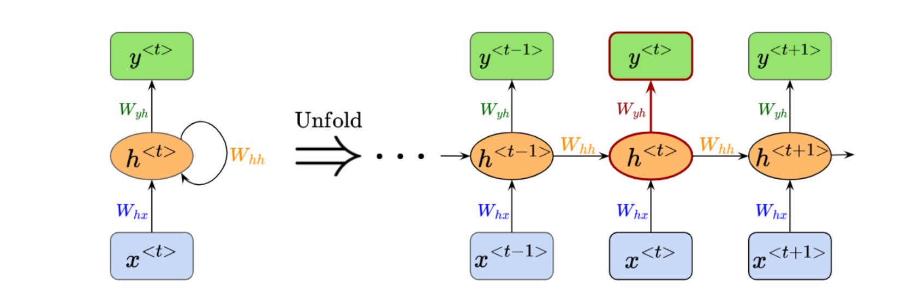

Building a Recurrent Neural Network (RNN) from Scratch
In this project, I will build an RNN using only NumPy and use the model to generate text.
16 OCTOBER 2026
Writing prompt: Briefly introduce what you want to learn, the dataset you will use, and the results you expect.
1. Recurrent Neural Network Overview
Explain in your own words what an RNN is, which kinds of data it works well with, and the role of the hidden state.

An RNN receives the input \(x^{\langle t\rangle}\) and the previous hidden state \(h^{\langle t-1\rangle}\), then produces a new hidden state \(h^{\langle t\rangle}\).
2. Describing the RNN Mathematically
Introduce the weight matrices and their dimensions before explaining each calculation.
2.1. Forward Propagation
The net input to the hidden state at time \(t\) is:
\[ z_h^{\langle t\rangle} = W_{hx}x^{\langle t\rangle} + W_{hh}h^{\langle t-1\rangle} + b_h \]We then apply the \(\tanh\) activation function to obtain the new hidden state:
\[ \boxed{h^{\langle t\rangle} = \tanh\!\left(z_h^{\langle t\rangle}\right)} \]The output and probability distribution for the next character are:
\[ \begin{aligned} z_y^{\langle t\rangle} &= W_{yh}h^{\langle t\rangle} + b_y, \\ \hat{y}^{\langle t\rangle} &= \operatorname{softmax}\!\left(z_y^{\langle t\rangle}\right). \end{aligned} \]After each equation, explain its meaning with a small example instead of only listing symbols.
2.2. Backpropagation Through Time
Using cross-entropy, the total loss over a sequence of length \(T\) can be written as:
\[ \mathcal{L} = -\sum_{t=1}^{T} y^{\langle t\rangle}\log\!\left(\hat{y}^{\langle t\rangle}\right) \]An important gradient at the output layer is:
\[ \frac{\partial \mathcal{L}^{\langle t\rangle}} {\partial z_y^{\langle t\rangle}} = \hat{y}^{\langle t\rangle} - y^{\langle t\rangle} \]Explain how the gradient moves backward from the final time step to the first and why this method is called Backpropagation Through Time.
2.3. Vanishing and Exploding Gradients
Dependencies across many time steps produce a product of multiple derivatives:
\[ \frac{\partial h^{\langle t\rangle}} {\partial h^{\langle k\rangle}} = \prod_{i=k+1}^{t} \frac{\partial h^{\langle i\rangle}} {\partial h^{\langle i-1\rangle}} \]Explain intuitively what happens when the multiplied terms are repeatedly smaller than 1 or larger than 1.
3. NumPy Implementation and Results
Describe the dataset, hyperparameters, and how you validate the model before adding your implementation.
import numpy as np
# Example structure for one forward step
def rnn_step(x_t, h_prev, W_hx, W_hh, b_h):
z_h = W_hx @ x_t + W_hh @ h_prev + b_h
h_t = np.tanh(z_h)
return h_t3.1. Training Results
Add the loss curve, generated text, and your own observations here.
References
- Coding Owen's RNN project article
- Add the books, lectures, repositories, or documentation you actually used.